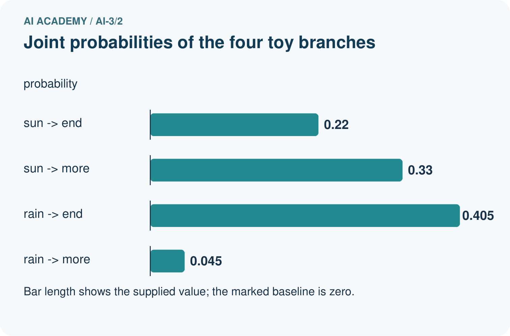
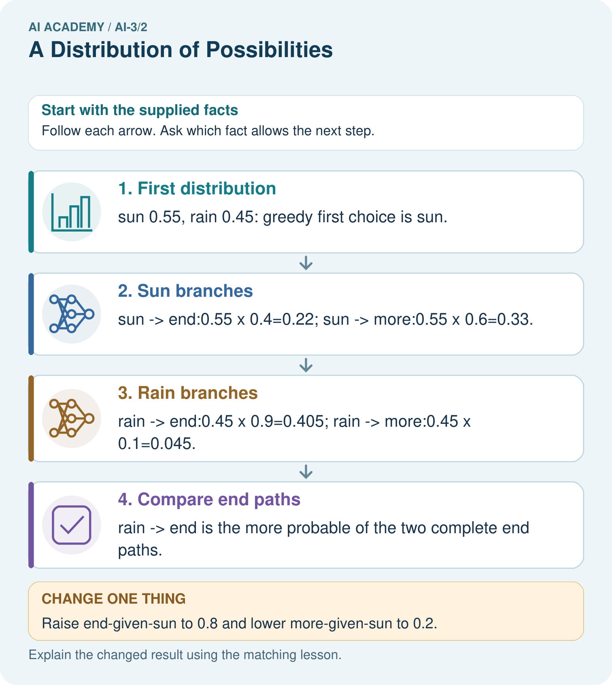

AI Academy · Level 3 · Grade 8 · Week 2 · Workbook
A Distribution of Possibilities
Learn to understand, design, build, test and explain AI systems responsibly.
Project: Verified Study Buddy
Workbook · 1 of 25
Recall and choose your starting point
Try the recall before opening notes. Then use a different colour or a labelled second line to correct your explanation.
Predictive and Generative AI
Without opening the old lesson, explain one key idea from Predictive and Generative AI. Give an example and a mistake that the idea helps you avoid.
Workbook · 2 of 25
Practise with fading help
Use W2: Calculate the paths for Next token distributions. Record the answer once; the lesson and workbook refer to the same attempt.
| Given inputs | Procedure I chose | Middle steps | Result and check |
|---|---|---|---|
Workbook · 3 of 25
Individual reasoning check
Use the worked case for Next token distributions. Proposed explanation: “Conditional products assume independence”. Decide whether this explanation is supported. Point to the step or supplied fact that decides; explain your repair if needed.
Workbook · 4 of 25
Independent transfer case
Independent case: Analyse a new table independently
First tokens go=0.4, wait=0.35, ask=0.25. End probabilities given them are 0.5,0.8,1 respectively; each branch has a complementary more token. Compute all three end-path probabilities and their sum. Which first token is greedy, which end path is largest, and does either verify a real status?
Attempt this case before feedback. Record any help. Earlier examples below are further practice; a case already practised with feedback cannot establish fresh transfer.
Workbook · 5 of 25
Your learning target
A toy next-token distribution is sun=.5, rain=.3, snow=.2. Over ten samples, must sun occur exactly five times? Does the highest-probability token establish a true statement about weather?
Workbook · 6 of 25
Solve the given case
A toy next-token distribution is rain .5, sun .3, snow .2.
Check total and interpret the largest value.
Show your trace, calculation or evidence
Workbook · 7 of 25
Check a changed case
A toy next-token distribution assigns cat 0.5, dog 0.3 and bird 0.2. Check the total and name the most likely token. Must it be selected every time when sampling?
My independent answer and reason
Week 2 Test and reflect
Workbook · 8 of 25
Design a revealing test
Create a changed input, boundary case or missing-information case. Write the expected answer or safe response before testing.
| Test record | My evidence |
|---|---|
| Changed input or condition | |
| Expected answer or fallback | |
| Observed result | |
| Why the result occurred |
Workbook · 9 of 25
Project checkpoint
Explain that Study Buddy responses come from possibilities, so important claims need checks.
The project change and evidence I will keep
Workbook · 10 of 25
Self check
I can explain the mechanism. I can show evidence. I can handle a changed case. I can name a limit. Mark each as not yet, with help or independently, and attach supporting work.
Teacher review ____________________ Next step ____________________
Workbook · 11 of 25
Transfer practice from the original programme
A toy next-token distribution is sun=.5, rain=.3, snow=.2. Over ten samples, must sun occur exactly five times? Does the highest-probability token establish a true statement about weather?
Record support used: none, hint or teacher explanation.
Workbook · 12 of 25
W1 Validate the table
Check 0.5,0.3,0.2 as probabilities. Interpret their sum and the complement of ready.
Workbook · 13 of 25
W2 Calculate the paths
Compute ready,end; busy,end; unknown,end and their combined probability.
Workbook · 14 of 25
W3 Test a greedy claim
Use A=0.6,B=0.4 and end conditional probabilities 0.51 and 1. Compare greedy A,end with B,end.
Workbook · 15 of 25
W4 Analyse a new table independently
First tokens go=0.4, wait=0.35, ask=0.25. End probabilities given them are 0.5,0.8,1 respectively; each branch has a complementary more token. Compute all three end-path probabilities and their sum. Which first token is greedy, which end path is largest, and does either verify a real status?
Workbook · 16 of 25
W5 Normalise with a stated rule
Weights are ready 6,busy 3,unknown 1. Convert them into probabilities. What if a weight is -1?
Workbook · 17 of 25
Embeddings and position — W1 Look up vectors
For red blue name the IDs, embedding rows and shape before adding positions.
Workbook · 18 of 25
Embeddings and position — W2 Add positions
Compute representations for red blue and blue red under the stated position table.
Workbook · 19 of 25
Embeddings and position — W3 Audit the sum
Sum the rows for both sequences. Does the sum establish that the original text had the same order?
Workbook · 20 of 25
Embeddings and position — W4 Trace new vectors independently
Embeddings A=[1,2], B=[3,0], position 0=[0,1], position 1=[1,0]. Compute represented rows and sums for A B and B A. Explain what the equal sums mean.
Workbook · 21 of 25
Embeddings and position — W5 Handle a shape failure
An embedding has width two but its position vector has width three. The input also contains a third position absent from the table. Specify honest handling.
Workbook · 22 of 25
Feedback, return check and learning record
| Evidence | My record |
|---|---|
| Worked alone / hint / model | |
| First step I repaired and why | |
| New case checked later; date and result | |
| What I can now explain without notes | |
| One remaining question |
Revisit this idea with your teacher after a delay. Familiarity is different from explaining and using it on a changed case.
Workbook · 23 of 25
Pictorial case practice: A Distribution of Possibilities
A fictional two-stage token tree illustrates next-token prediction.
First token probabilities: sun 0.55, rain 0.45. Given sun: end 0.4, more 0.6. Given rain: end 0.9, more 0.1.
These are complete toy branches; end paths stop, more paths do not.


Why is 0.625 not a broken probability sum?
Support used: alone / hint / worked example. This record is practice evidence.
Project connection: Explain Study Buddy generation as conditional choices, while checking the finished factual claims against sources.
Workbook · 24 of 25
Project portfolio milestone
Project: Verified Study Buddy
Current milestone: Frame the need. Name the user, the problem, allowed inputs and a safe simple starting method.
Explain Study Buddy generation as conditional choices, while checking the finished factual claims against sources.
| Evidence to keep | My record |
|---|---|
| This week’s input and deciding step | |
| Prediction and actual result (or labelled paper trace) | |
| One change since the previous checkpoint and why | |
| One error or limit and the next test |
Workbook · 25 of 25
Supported practice and learning evidence
Use this supported practice once, in the browser or on paper. Keep the reserved independent assessment for a separate first attempt before teacher feedback.
A fictional two-stage token tree illustrates next-token prediction.
Practice 1: explain the deciding evidence
Which labelled step matches this detail? rain→end is the more probable of the two complete end paths.
1. Rain branches
2. Compare end paths
3. Sun branches
4. First distribution
Hint if needed: Read the steps in the pictorial case. Match the supplied detail to the stage that performs or records it.
After your attempt, compare with the supported explanation: Compare end paths rain→end is the more probable of the two complete end paths. Conditional probabilities describe what follows a particular prefix. Multiplying along a path gives its joint probability. The four branch products sum to 1, but the two end paths sum to 0.625 because more branches have not ended. Greedy decoding selects sun then more; it does not guarantee the most likely complete sequence.
Practice 2: explain the deciding evidence
Changed-case practice: Raise end-given-sun to 0.8 and lower more-given-sun to 0.2. Which conclusion is supported by the supplied facts?
1. We can decide the result without examining the changed input or the procedure.
2. This one example guarantees correct results for every future input.
3. sun→end becomes 0.44, beating unchanged rain→end 0.405.
Hint if needed: Use the changed condition and the deciding step in the pictorial trace. The answer must say what follows from those facts.
After your attempt, compare with the supported explanation: sun→end becomes 0.44, beating unchanged rain→end 0.405. Changing one conditional distribution changes its path products while the first-token probabilities remain fixed.
Repair a missing building block
Review Predictive and Generative AI (ai-3/1). Goal: Distinguish discriminative prediction from generation by inspecting the requested output. Short practice: Identify the first unsupported claim and explain what source would be needed before asserting it.. Return to this week and explain what you changed.
Keep your completed work
Use Download completed work in the hosted lesson to export your answers, reflections, practice feedback and code-run evidence. Open the HTML copy to read or print it. Drafts stay in this browser when storage is available; clear drafts on a shared device.